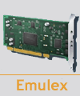

Target driver for Emulex lpfc FC/FCoE adapters

Target driver for Emulex lpfc FC/FCoE adapters is developed by the Emulex team.
The driver allows for lpfc adapters to be placed in initiator and/or target mode. Those in initiator mode will continue to function with the SCSI subsystem as usual. A lpfc_scst helper module is then loaded that binds the target mode adapters with the SCST subsystem for use as FCP targets. NPIV is also supported, allowing virtual ports to be created with individual SCST target instances bound to them.
The lpfc SCST driver kit is part of the lpfcxxxx SourceForge project located at Emulex Linux Drivers page.
You can find version which can compile on RHEL5 platforms here. Thanks to Chris Worley who supplied it.
This driver compatible only with SCST 1.x. To update it for 2.x you should perform the following steps:
- Replace on line #1503 "scst_unregister(tgtport->scst_tgt)" on "scst_unregister_target(tgtport->scst_tgt)"
- Replace on line #1570 "tgtport->scst_tgt = scst_register(&scst_data, wwpn)" on "tgtport->scst_tgt = scst_register_target(&scst_data, wwpn)"
- Replace on line #1784 "wwpn, login_handle, tm_session_reg_callback)" on "wwpn, NULL, login_handle, tm_session_reg_callback)"
Patch to put this driver in the SCST SVN trunk is welcome!